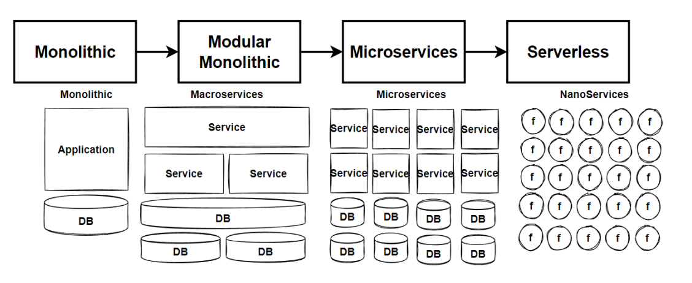

Microservices & DDD · REST and gRPC · Messaging · API Gateway
| # | Topic | Time |
|---|---|---|
| Opening | ~2 min | |
| 1 | Introduction to Microservices & DDD: monolith vs. microservices, design principles, DDD, bounded contexts | ~14 min |
| 2 | Synchronous communication: service-to-service calls, REST vs. gRPC, Protobuf and gRPC in .NET | ~10 min |
| 3 | Asynchronous communication: event-driven basics, message brokers (RabbitMQ), pub/sub | ~9 min |
| 4 | API Gateway & BFF: role of a gateway, Backends for Frontends, YARP and Ocelot | ~6 min |
| 5 | Summary and Q&A | ~20 min |
What microservices are, how to design them, and where to draw the lines
From one big application to many small units. Moving right, the pieces get smaller and the number of databases grows.

Small, independent services that work together to form one application.
Loosely coupled services that work together
Each one owned by a small team
HTTP/REST, gRPC, or messaging
Release one service without touching the others
Each service can use a different stack
Never shared with other services
| Aspect | Monolith | Microservices |
|---|---|---|
| Structure | One undivided unit | Many heterogeneous services and databases |
| Scalability | Scale the whole app | Scale each service independently |
| Deployment | Simple, all at once | Independent, zero-downtime, CI/CD |
| Data | One shared database | Database per service (polyglot) |
| Failure | One bug can take down everything | Faults are isolated |
| Team fit | Small or new teams | Experienced teams with container and DevOps skills |
Microservices don't remove complexity. They move it, from inside the code to between the services.
Six principles that keep a microservice system from turning into a distributed monolith.
One service per business capability (Catalog, Basket, Ordering), not per technical layer
Change one service without changing others; related logic stays together
Deploy independently and own your data (database per service)
Talk only through APIs and events: smart endpoints, dumb pipes
Timeouts, retries, circuit breakers: one failing service must not take down the rest
CI/CD, containers, health checks, centralized logging
Based on Martin Fowler's microservice characteristics: componentization via services, business capabilities, products not projects, smart endpoints and dumb pipes, decentralized governance and data, infrastructure automation, design for failure.
Introduced by Eric Evans (Domain-Driven Design, 2003). Not a technology or framework, but a way to model software around the business.
→ Tells us where to split into microservices
→ Tells us how to build one service's model
Five words you'll hear in every DDD conversation, with their meaning in EShop.
| Concept | Meaning | In EShop |
|---|---|---|
| Domain | The business problem the software solves | E-commerce |
| Subdomain | One area of expertise inside the domain | Product catalog, shopping cart, discounts, orders |
| Ubiquitous language | Shared words used by domain experts and in the code | Order, OrderItem, ShippingAddress, Payment appear in code exactly as the business says them |
| Bounded context | A logical boundary where one model and one language apply | Catalog, Basket, Discount, Ordering |
| Context map | How the bounded contexts relate and communicate | Basket → Discount (gRPC), Basket → Ordering (event) |
| User story | Noun / verb | Bounded context → service |
|---|---|---|
| List and filter products by category | Product, Category | Catalog |
| Put products into the shopping cart | ShoppingCart, Item | Basket |
| Apply coupons and see the total cost | Coupon, Discount | Discount |
| Check out the cart and create an order | Order, Address, Payment | Ordering |
Id · Name · Description · ImageFile · Categories · Price
Id · Name · Price
A bounded context is usually one microservice, but it can be split further if parts need to scale differently.
Razor Pages + Refit
routing · rate limiting
+ MassTransit
event bus
Service-to-service calls where the caller waits for the answer
Services must cooperate: ask for data ("what's the discount?") or trigger work ("create the order").
EShop: Basket → Discount (gRPC) · Web → Gateway → APIs (REST)
EShop: Basket → Ordering (BasketCheckout event)
.proto fileservice = methods, message = data= 1, = 2… are field numbers, not defaults// Discount.Grpc/Protos/discount.proto syntax = "proto3"; option csharp_namespace = "Discount.Grpc"; service DiscountProtoService { rpc GetDiscount (GetDiscountRequest) returns (CouponModel); rpc CreateDiscount (CreateDiscountRequest) returns (CouponModel); rpc UpdateDiscount (UpdateDiscountRequest) returns (CouponModel); rpc DeleteDiscount (DeleteDiscountRequest) returns (DeleteDiscountResponse); } message GetDiscountRequest { string productName = 1; } message CouponModel { int32 id = 1; string productName = 2; string description = 3; int32 amount = 4; }
// Program.cs builder.Services.AddGrpc(); builder.Services.AddDbContext<DiscountContext>(opts => opts.UseSqlite(builder.Configuration.GetConnectionString("Database"))); var app = builder.Build(); app.UseMigration(); app.MapGrpcService<DiscountService>();
// Services/DiscountService.cs — inherits the generated base class (simplified) public class DiscountService(DiscountContext dbContext, ILogger<DiscountService> logger) : DiscountProtoService.DiscountProtoServiceBase { public override async Task<CouponModel> GetDiscount(GetDiscountRequest request, ServerCallContext context) { var coupon = await dbContext.Coupons .FirstOrDefaultAsync(x => x.ProductName == request.ProductName) ?? new Coupon { ProductName = "No Discount", Amount = 0, Description = "No Discount Desc" }; return coupon.Adapt<CouponModel>(); } // CreateDiscount, UpdateDiscount, DeleteDiscount ... }
<!-- Basket.API.csproj — generate only the client stub from the shared .proto file --> <Protobuf Include="..\..\Discount\Discount.Grpc\Protos\discount.proto" GrpcServices="Client" />
builder.Services.AddGrpcClient<DiscountProtoService.DiscountProtoServiceClient>(options =>
options.Address = new Uri(builder.Configuration["GrpcSettings:DiscountUrl"]!))
.ConfigurePrimaryHttpMessageHandler(() => new HttpClientHandler
{ // development only: accept the self-signed dev certificate
ServerCertificateCustomValidationCallback =
HttpClientHandler.DangerousAcceptAnyServerCertificateValidator
});
// StoreBasketHandler.cs (Handle omitted) public class StoreBasketCommandHandler(IBasketRepository repository, DiscountProtoService.DiscountProtoServiceClient discountProto) : ICommandHandler<StoreBasketCommand, StoreBasketResult> { private async Task DeductDiscount(ShoppingCart cart, CancellationToken ct) { foreach (var item in cart.Items) { var coupon = await discountProto.GetDiscountAsync( new GetDiscountRequest { ProductName = item.ProductName }, cancellationToken: ct); item.Price -= coupon.Amount; } } }
| REST | gRPC | |
|---|---|---|
| Transport | HTTP/1.1 or HTTP/2 | HTTP/2 |
| Payload | JSON (text, human-readable) | Protobuf (binary, smaller and faster) |
| Contract | Optional (OpenAPI) | Required (.proto), code is generated |
| Browser support | Native | Needs gRPC-Web or a proxy |
| Streaming | Request/response only | Client, server and bidirectional streaming |
| Easy to test by hand | Yes: curl, browser, Postman | Needs gRPC tooling (Postman, grpcurl) |
Public APIs, browsers, third parties, simple CRUD
Internal, high-volume, low-latency calls between your own services
Events, brokers, and publish/subscribe
Six calls for one click. Every service must be up, latencies add up, one slow service slows everyone.
CreateOrder
Tells one specific service what to do
BasketCheckedOut
Announces what happened to anyone interested
MassTransit: .NET library on top of RabbitMQ that creates exchanges and queues and handles serialization and retries.
RabbitMQ: an open-source broker that implements AMQP.
| Exchange | Routes messages |
|---|---|
| Direct | By exact routing key, to one queue |
| Fanout | To all bound queues (broadcast) |
| Topic | By routing-key pattern |
| Headers | By message header attributes |
Similar brokers: Apache Kafka, Azure Service Bus, ActiveMQ
publisher
fanout
public record IntegrationEvent { public Guid Id => Guid.NewGuid(); public DateTime OccurredOn => DateTime.Now; public string EventType => GetType().AssemblyQualifiedName; } public record BasketCheckoutEvent : IntegrationEvent { public string UserName { get; set; } = default!; public decimal TotalPrice { get; set; } = default!; // address + payment fields ... }
public static IServiceCollection AddMessageBroker( this IServiceCollection services, IConfiguration configuration, Assembly? assembly = null) { services.AddMassTransit(config => { config.SetKebabCaseEndpointNameFormatter(); if (assembly != null) config.AddConsumers(assembly); // consumers only config.UsingRabbitMq((context, cfg) => { cfg.Host(new Uri(configuration["MessageBroker:Host"]!), host => { host.Username(configuration["MessageBroker:UserName"]); host.Password(configuration["MessageBroker:Password"]); }); cfg.ConfigureEndpoints(context); }); }); return services; }
// Program.cs builder.Services.AddMessageBroker(builder.Configuration); // CheckoutBasketHandler.cs (simplified) public class CheckoutBasketCommandHandler( IBasketRepository repository, IPublishEndpoint publishEndpoint) : ... { public async Task<CheckoutBasketResult> Handle(...) { var basket = await repository.GetBasket(userName, ct); if (basket == null) return new(false); var evt = dto.Adapt<BasketCheckoutEvent>(); evt.TotalPrice = basket.TotalPrice; await publishEndpoint.Publish(evt, ct); await repository.DeleteBasket(userName, ct); return new(true); } }
// DependencyInjection.cs — also scans for consumers services.AddMessageBroker(configuration, Assembly.GetExecutingAssembly()); // BasketCheckoutEventHandler.cs public class BasketCheckoutEventHandler( ISender sender, ILogger<BasketCheckoutEventHandler> logger) : IConsumer<BasketCheckoutEvent> { public async Task Consume( ConsumeContext<BasketCheckoutEvent> context) { logger.LogInformation("Integration Event handled: {e}", context.Message.GetType().Name); var command = MapToCreateOrderCommand(context.Message); await sender.Send(command); // creates the order } }
One front door for all clients, or one per kind of client
Without a gateway, every client must know every service's address, and every service handles auth, SSL and rate limiting itself.
Route each request to the right internal service (layer 7). Move a service: only gateway config changes.
Combine several service calls into one response
Handle cross-cutting concerns in one place
Request validation
IP allowlisting
Authentication / authorization
Rate limiting
Service discovery
Protocol conversion
One gateway per type of client, instead of one gateway for everyone.
Customer · ShoppingCart
Discount · Order
builder.Services.AddReverseProxy() .LoadFromConfig(builder.Configuration.GetSection("ReverseProxy")); builder.Services.AddRateLimiter(o => o.AddFixedWindowLimiter("fixed", opt => { opt.Window = TimeSpan.FromSeconds(10); opt.PermitLimit = 5; })); app.UseRateLimiter(); app.MapReverseProxy();
"ReverseProxy": { "Routes": { "catalog-route": { "ClusterId": "catalog-cluster", "Match": { "Path": "/catalog-service/{**catch-all}" }, "Transforms": [ { "PathPattern": "{**catch-all}" } ] }, "ordering-route": { "ClusterId": "ordering-cluster", "RateLimiterPolicy": "fixed", "Match": { "Path": "/ordering-service/{**catch-all}" }, "Transforms": [ { "PathPattern": "{**catch-all}" } ] } }, "Clusters": { "catalog-cluster": { "Destinations": { "destination1": { "Address": "http://catalog.api:8080" } } }, "ordering-cluster": { "...": "http://ordering.api:8080" } } }
Ocelot is an open-source API gateway library for .NET, configured with an ocelot.json file.
| YARP | Ocelot | |
|---|---|---|
| From | Microsoft | Open-source community |
| What it is | Reverse-proxy toolkit, highly customizable in C# | Ready-made API gateway |
| Config | Routes + clusters (appsettings.json or code) |
Upstream/downstream routes (ocelot.json) |
| Built in | Routing, load balancing, health checks, transforms | Routing, rate limiting, auth, caching, request aggregation |
| Extra features | From ASP.NET Core middleware | Mostly through Ocelot's own config |
{ "Routes": [ {
"UpstreamPathTemplate": "/catalog-service/{everything}",
"UpstreamHttpMethod": [ "Get", "Post", "Put", "Delete" ],
"DownstreamPathTemplate": "/{everything}",
"DownstreamScheme": "http",
"DownstreamHostAndPorts": [ { "Host": "catalog.api", "Port": 8080 } ]
} ] }
builder.Configuration.AddJsonFile("ocelot.json"); builder.Services.AddOcelot(builder.Configuration); var app = builder.Build(); await app.UseOcelot(); app.Run();
Illustration only: the same Catalog route, written for Ocelot.
Small, autonomous services built around business capabilities, each with its own data and deployment. Adopt them only for a real reason.
Where to split (bounded contexts, ubiquitous language)
REST for client-facing APIs, gRPC + Protobuf for fast, contract-first internal calls
Events through a message broker (RabbitMQ + MassTransit) with pub/sub, for decoupled workflows
YARP or Ocelot as the single entry point; BFF when you have several kinds of clients
Thank you!